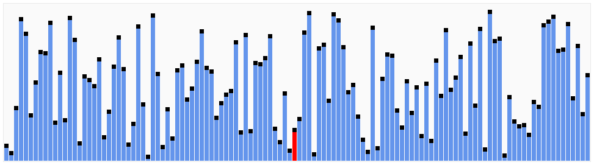
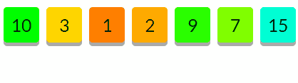

Algorytmy Sortujące
Quick Sort
[Sortowanie szybkie]
© Roman Dąbal 2016 ©
© Roman Dąbal 2016 ©
Quick Sort to popularny i chętnie implementowany algorytm sortujący. Wyróżnia go wydajność i prostota implementacji.
Sortowanie tym algorytmem opiera się o metodę "dziel i zwyciężaj". Polega ona na rozbicu głównego problemu na podproblemy.
Średnia złożoność obliczeniowa:
Pesymistyczna złożność obliczeniowa:
(Różni się w zależności od wariantu algorytmu)
Na początek wybierany jest jeden punkt tablicy określany jako pivot.
Może być on dowolnym elementem tablicy. Dodatkowo tworzone są parametry i oraz j wskazujące elementy tabeli.
Upraszczając:
Elementy większe od punktu pivot wędrują na prawo, mniejsze na lewo.
Podmienia się tylko i wyłącznie parami (tylko kiedy znajdziemy elementy po dwóch stronach pivot)
Następnie algorytm dzieli promblem na dwa mniejsze:
Elementy mniejsze lub równe od pivot i większe od pivot.W tym wypadku pivot'em zerowego poziomu była liczba 2. Powstały więc dwa podproblemy:
tab[0, 1] (2, 1) oraz tab[2,6] (3, 10, 9, 7, 15)
Algorytm następnie powtarza poprzednie kroki dla każdego podproblemu.
function quickSort(tab, left, right){
if(right <= left)
return 0;
var i = left - 1;
var j = right + 1;
var pivotPoint = Math.round((left+right)/2);
var pivot = tab[pivotPoint];
while(1){
while(pivot > tab[++i]);
while(pivot < tab[--j]);
if(i <= j)
swap(tab, i, j);
else
break;
}
if(j > left)
quickSort(tab, left, j);
if(i < right)
quickSort(tab, i, right);
return tab;
}
Tak przy okazji creditsy:
eduinf.waw.pl - wikipedia.com - inne